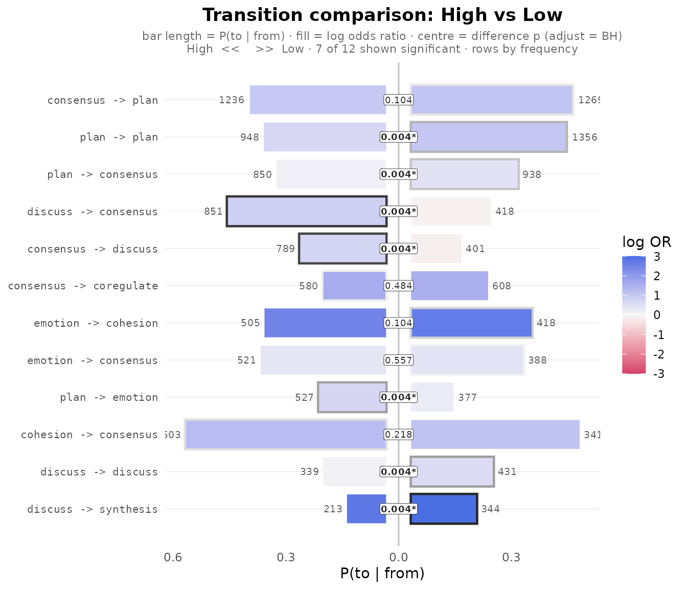

Case study: regulation in high and low achieving groups
Written by Mohammed Saqr and Sonsoles López-Pernas
Source:vignettes/articles/case-group-regulation.Rmd
case-group-regulation.RmdStudents who learn together have to regulate their joint work: they plan, monitor progress, build consensus, discuss, manage the emotional climate and adapt when something fails. Socially shared regulation is a sequence of such acts, and its quality lies less in how often each act occurs than in what follows what. Planning that leads to monitoring is a different process from planning that leads to more planning. A comparison of high and low achieving students therefore asks whether the two groups order their regulation differently, not only whether they use different acts.
Lag sequential analysis gives the per-transition answer. Within each
group, it tests every ordered pair of acts against the frequency
expected if the next act did not depend on the current one (Bakeman
& Quera, 2011). Between groups, compare_lsa() asks
whether a transition’s departure from independence differs more than a
random relabelling of the students would produce, and
bayes_compare_lsa() estimates how large the difference in
transition probability is. This case study sets up the sequences,
describes the regulation transitions of each achievement group, locates
the transitions where the groups differ and checks those differences
with a Bayesian comparison.
Data
group_regulation_long is a long event log of coded
regulation acts in collaborative learning, the long companion of the
group_regulation sequence data, taken from the tna package.
Each row is one act.
-
Student:
Actor— 2,000 students; each student’s acts form one sequence. -
Achievement group:
Achiever—HighorLow, the grouping variable of the comparison. -
Collaboration group:
Group— 200 groups of students who work together. -
Course:
Course—A,BorC. -
Time stamp:
Time— date and clock time of the act; orders the acts within a student. -
Act:
Action— one of nine regulation acts:adapt,cohesion,consensus,coregulate,discuss,emotion,monitor,plan,synthesis.
head(group_regulation_long)
#> Actor Achiever Group Course Time Action
#> 1 1 High 1 A 2025-01-01 08:27:07 cohesion
#> 2 1 High 1 A 2025-01-01 08:35:20 consensus
#> 3 1 High 1 A 2025-01-01 08:42:18 discuss
#> 4 1 High 1 A 2025-01-01 08:50:00 synthesis
#> 5 1 High 1 A 2025-01-01 08:52:25 adapt
#> 6 1 High 1 A 2025-01-01 08:57:31 consensus
with(group_regulation_long, table(Action))
#> Action
#> adapt cohesion consensus coregulate discuss emotion monitor plan
#> 554 1839 6797 2133 4267 3075 1516 6623
#> synthesis
#> 729
with(group_regulation_long, table(Course, Achiever))
#> Achiever
#> Course High Low
#> A 12390 0
#> B 1331 8295
#> C 0 5517The 27,533 acts are dominated by consensus (6,797) and
plan (6,623); adapt (554) and
synthesis (729) are the rarest. The course table carries an
important constraint for interpretation: course A holds
only high achievers and course C only low achievers, and
only course B holds both. Achievement and course are
therefore largely confounded, and every difference between the groups
below is also, in part, a difference between courses.
aggregate(cbind(students = Actor, achievement_levels = Achiever) ~ Group,
data = group_regulation_long,
FUN = \(x) length(unique(x))) |>
summary()
#> Group students achievement_levels
#> Min. : 1.0 Min. :10 Min. :1
#> 1st Qu.: 50.8 1st Qu.:10 1st Qu.:1
#> Median :100.5 Median :10 Median :1
#> Mean :100.5 Mean :10 Mean :1
#> 3rd Qu.:150.2 3rd Qu.:10 3rd Qu.:1
#> Max. :200.0 Max. :10 Max. :1Every collaboration group has 10 students, all with the same achievement level. Students are nested in collaboration groups, and the 1,000 students in each achievement group come from 100 collaboration groups.
How are the sequences built?
In a long log, a sequence is defined by the columns that bound it.
With actor = "Actor", each student’s acts form a sequence,
ordered by Time. When a time column is given,
lsa() also starts a new sequence whenever two consecutive
acts of a student are more than time_threshold seconds
apart (900 seconds, 15 minutes, by default). The largest gap between
consecutive acts of each student shows whether that rule splits anything
here.
aggregate(cbind(largest_gap_s = as.numeric(Time)) ~ Actor,
data = group_regulation_long,
FUN = \(x) max(diff(sort(x)))) |>
summary()
#> Actor largest_gap_s
#> Min. : 1 Min. : 13
#> 1st Qu.: 501 1st Qu.:432
#> Median :1000 Median :471
#> Mean :1000 Mean :441
#> 3rd Qu.:1500 3rd Qu.:488
#> Max. :2000 Max. :500No student has a gap longer than 500 seconds, so the default threshold keeps each student’s acts in one sequence. A shorter threshold would cut through the ordinary pace of the work.
lsa(group_regulation_long, actor = "Actor", action = "Action",
time = "Time") |>
summary() |>
as.data.frame()
#> engine lag n_states n_sequences n_events n_transitions n_significant alpha lrx2
#> 1 classical 1 9 2000 27533 25533 72 0.05 13204
#> lrx2_df lrx2_p x2 x2_df x2_p
#> 1 64 0 15435 64 0
lsa(group_regulation_long, actor = "Actor", action = "Action",
time = "Time", time_threshold = 300) |>
summary() |>
as.data.frame()
#> engine lag n_states n_sequences n_events n_transitions n_significant alpha lrx2
#> 1 classical 1 9 12305 27533 15228 69 0.05 7927
#> lrx2_df lrx2_p x2 x2_df x2_p
#> 1 64 0 9222 64 0With the default threshold the log yields 2,000 sequences, one per student, and 25,533 transitions. A 300-second threshold splits the same log into 12,305 sequences and keeps only 15,228 transitions, because every transition across a gap is dropped. Gaps of up to about eight minutes between the acts of a student working in a group are part of one session, not a break between sessions, so the analysis keeps the default.
Which transitions characterise each group?
group = "Achiever" fits one model per achievement group.
Both fits share the same nine states, so their tables are directly
comparable.
g <- lsa(group_regulation_long, actor = "Actor", action = "Action",
time = "Time", group = "Achiever")
summary(g)
#> group engine lag n_states n_sequences n_events n_transitions n_significant alpha
#> 1 High classical 1 9 1000 13721 12721 66 0.05
#> 2 Low classical 1 9 1000 13812 12812 67 0.05
#> lrx2 lrx2_df lrx2_p x2 x2_df x2_p
#> 1 6147 64 0 6807 64 0
#> 2 7715 64 0 9197 64 0Each group contributes 1,000 sequences; the high achievers have 12,721 transitions and the low achievers 12,812. In both groups the independence model fails (G² = 6,147 and 7,715 on 64 degrees of freedom), and 66 and 67 of the 81 transitions are significant. With more than 12,000 transitions per group almost every cell is significant, so the comparison of the groups rests on the size of the effects rather than on the significance flags. The frequent over-represented transitions, those observed at least 400 times, are the backbone of each group’s regulation.
transitions(g, direction = "over", min_count = 400, sort = "strength")
#> group from to lag count expected prob prob_col adj_res p yules_q
#> 1 High emotion cohesion 1 505 114.0 0.326 0.540 40.59 0.00e+00 0.8467
#> 2 High consensus coregulate 1 580 254.4 0.171 0.608 24.79 1.21e-135 0.6632
#> 3 High consensus plan 1 1236 777.0 0.364 0.424 21.90 2.64e-106 0.4466
#> 4 High cohesion consensus 1 503 253.6 0.536 0.146 19.05 6.28e-81 0.5540
#> 5 High discuss consensus 1 851 541.5 0.425 0.247 16.96 1.53e-64 0.3977
#> 6 High plan plan 1 948 662.5 0.328 0.325 14.37 7.58e-47 0.3221
#> 7 High consensus discuss 1 789 529.6 0.233 0.397 14.33 1.39e-46 0.3462
#> 8 High plan emotion 1 527 344.9 0.182 0.347 11.89 1.36e-32 0.3310
#> 9 High emotion consensus 1 521 419.0 0.336 0.151 6.22 4.87e-10 0.1776
#> 10 High plan consensus 1 850 781.8 0.294 0.247 3.25 1.17e-03 0.0758
#> 11 Low emotion cohesion 1 418 78.6 0.325 0.535 41.67 0.00e+00 0.8730
#> 12 Low consensus coregulate 1 608 261.6 0.207 0.533 25.56 3.80e-144 0.6413
#> 13 Low consensus plan 1 1269 756.5 0.432 0.385 24.63 5.60e-134 0.4922
#> 14 Low plan plan 1 1356 841.0 0.415 0.411 23.88 5.24e-126 0.4706
#> 15 Low discuss discuss 1 431 293.4 0.221 0.223 9.46 3.03e-21 0.2793
#> 16 Low plan consensus 1 938 746.7 0.287 0.320 9.24 2.57e-20 0.2091
#> kappa kappa_z kappa_p lift sign significant
#> 1 0.4255 37.69 6.36e-311 4.43 over TRUE
#> 2 0.4615 24.61 9.79e-134 2.28 over TRUE
#> 3 0.1804 18.96 3.49e-80 1.59 over TRUE
#> 4 0.3107 17.11 1.27e-65 1.98 over TRUE
#> 5 0.1728 14.55 5.70e-48 1.57 over TRUE
#> 6 0.1028 12.04 2.27e-33 1.43 over TRUE
#> 7 0.1338 11.27 1.92e-29 1.49 over TRUE
#> 8 0.1118 9.07 1.24e-19 1.53 over TRUE
#> 9 0.0585 4.26 2.06e-05 1.24 over TRUE
#> 10 0.0108 1.14 2.56e-01 1.09 over TRUE
#> 11 0.4543 40.13 0.00e+00 5.32 over TRUE
#> 12 0.3757 24.78 1.58e-135 2.32 over TRUE
#> 13 0.1992 21.74 8.64e-105 1.68 over TRUE
#> 14 0.1747 20.54 1.04e-93 1.61 over TRUE
#> 15 0.0625 7.35 1.99e-13 1.47 over TRUE
#> 16 0.0580 6.33 2.43e-10 1.26 over TRUEBoth groups share a common core. emotion to
cohesion is the strongest transition in both (z = 40.6 for
high and 41.7 for low achievers, lift 4.43 and 5.32): an emotional
expression is followed by an act of group cohesion.
consensus leads to coregulate and to
plan in both groups, and plan persists in
both. The groups differ in what surrounds this core. Among the high
achievers, cohesion leads on to consensus (z =
19.1), discuss leads to consensus (z = 17.0),
consensus returns to discuss (z = 14.3) and
plan leads to emotion (z = 11.9); none of
these reaches 400 observations with a positive residual among the low
achievers. The low achievers’ backbone has one transition the high
achievers’ lacks, discuss persisting (z = 9.5), and a
stronger persistence of plan (1,356 transitions, z = 23.9,
against 948 and z = 14.4). The high achievers’ regulation moves between
discussion, consensus and cohesion; the low achievers’ stays longer
within planning and within discussion.
Where do the groups differ?
compare_lsa() tests the groups transition by transition.
Its default measure is the log odds ratio of each transition, a measure
of the departure from independence that does not grow with the number of
transitions. The test permutes the achievement label of whole students,
R = 1,000 times, and compares each observed difference with its
permutation distribution. Transitions with fewer than 5 pooled
observations are not tested, and the p-values are adjusted for the
number of transitions tested with the Benjamini-Hochberg false discovery
rate procedure (adjust = "BH").
set.seed(2026)
cmp <- compare_lsa(g, R = 1000, adjust = "BH")
cmp
#> <lsa_comparison>
#> groups: High vs Low
#> measure: log_or difference (High - Low)
#> R: 1000 label permutations
#> edges: 39 significant of 78 tested (adjust = BH)
#> omnibus: statistic = 79.48, p = 0.000999
as.data.frame(cmp, what = "global")
#> group_a group_b statistic p_value R
#> 1 High Low 79.5 0.000999 1000The omnibus test, the sum of squared differences across all transitions, gives p = 0.001, the smallest value 1,000 permutations can produce: the two transition structures differ. 78 of the 81 transitions are tested and 39 of them differ after the adjustment. The strongest differences:
transitions(cmp, significant = TRUE, sort = "strength") |> head(12)
#> from to log_or_a log_or_b diff p_perm p_adj significant
#> 1 cohesion adapt -0.794 -3.921 3.13 0.000999 0.00354 TRUE
#> 2 emotion synthesis -1.619 -4.522 2.90 0.000999 0.00354 TRUE
#> 3 plan synthesis -2.145 -4.951 2.81 0.001998 0.00577 TRUE
#> 4 cohesion synthesis -1.355 -3.945 2.59 0.005994 0.01461 TRUE
#> 5 synthesis monitor -3.229 -0.975 -2.25 0.008991 0.02063 TRUE
#> 6 synthesis plan -0.581 -2.680 2.10 0.000999 0.00354 TRUE
#> 7 adapt coregulate -3.146 -1.176 -1.97 0.013986 0.02871 TRUE
#> 8 plan adapt -2.338 -4.230 1.89 0.024975 0.04995 TRUE
#> 9 coregulate adapt 0.778 -1.077 1.85 0.000999 0.00354 TRUE
#> 10 cohesion cohesion -0.587 -2.338 1.75 0.000999 0.00354 TRUE
#> 11 synthesis coregulate -1.734 -0.319 -1.41 0.002997 0.00806 TRUE
#> 12 discuss adapt 1.010 2.251 -1.24 0.000999 0.00354 TRUEdiff is the log odds ratio of the high achievers minus
that of the low achievers. The largest differences involve the rare acts
synthesis and adapt, which is where low
achievers avoid transitions much more strongly. cohesion to
adapt has a log odds ratio of -0.79 among high achievers
and -3.92 among low achievers (difference 3.13); emotion to
synthesis and plan to synthesis
are avoided by both groups but far more by the low achievers
(differences 2.90 and 2.81). In the other direction, low achievers move
from discuss to adapt more than high achievers
do (difference -1.24), and they avoid the moves from
synthesis to monitor and to
coregulate far less (log odds ratios -0.97 and -0.32,
against -3.23 and -1.73). The picture is that high achievers reach
synthesis from more points of the process, while low achievers adapt and
monitor after discussion and synthesis.
The largest differences sit in rare transitions. The frequent transitions, which carry most of the regulation, are better seen in a back-to-back barrel plot of the twelve most frequent transitions.
plot(cmp, top_n = 12)
Each row is one transition; the high achievers’ bar runs to the left
and the low achievers’ to the right. Bar length is the transition
probability, bar colour the group’s log odds ratio (blue above
independence, red below), the number at the end of each bar the observed
count, and the central chip the BH-adjusted p-value of the difference,
starred when significant. A dark border marks the group with the higher
value when the difference is large. Seven of the twelve frequent
transitions differ. discuss to consensus and
consensus to discuss have long blue bars on
the high achievers’ side and short, near-white bars on the low
achievers’ side: discussion and consensus alternate among high achievers
and not among low achievers. On the low achievers’ side,
plan to plan, discuss to
discuss and discuss to synthesis
are the longer bars. emotion to cohesion, the
strongest transition in both groups, does not differ.
A Bayesian check
The permutation test compares log odds ratios.
bayes_compare_lsa() compares the transition probabilities
themselves. It places a Dirichlet posterior on each row of each group’s
table, draws from the posterior of the difference in each transition
probability and reports its 95% credible interval. A transition is
flagged as credibly different when the interval excludes zero, the
difference exceeds 0.01 and the interval bound nearest zero exceeds
0.001. The p_adj column holds the Bayesian two-sided
p-values, also Benjamini-Hochberg adjusted (adjust = "BH");
the flag itself is set by the credible interval.
bc <- bayes_compare_lsa(g, adjust = "BH", seed = 2026)
as.data.frame(bc, what = "global")
#> group_a group_b n_credible
#> 1 High Low 38
transitions(bc, significant = TRUE, sort = "strength") |> head(10)
#> from to prob_a prob_b diff ci_low ci_high pd effect_size p_value
#> 1 discuss consensus 0.4242 0.2143 0.2098 0.1808 0.2381 1 14.46 0e+00
#> 2 synthesis consensus 0.5681 0.3818 0.1864 0.1097 0.2606 1 4.79 0e+00
#> 3 synthesis adapt 0.1434 0.2999 -0.1565 -0.2168 -0.0937 1 -5.01 0e+00
#> 4 synthesis plan 0.1434 0.0251 0.1183 0.0766 0.1650 1 5.27 0e+00
#> 5 consensus discuss 0.2324 0.1365 0.0960 0.0767 0.1147 1 9.89 0e+00
#> 6 discuss adapt 0.0242 0.1201 -0.0959 -0.1120 -0.0803 1 -11.92 0e+00
#> 7 plan plan 0.3275 0.4149 -0.0874 -0.1114 -0.0632 1 -7.09 0e+00
#> 8 cohesion consensus 0.5342 0.4485 0.0858 0.0373 0.1341 1 3.48 6e-04
#> 9 cohesion coregulate 0.0812 0.1661 -0.0850 -0.1169 -0.0543 1 -5.24 0e+00
#> 10 coregulate discuss 0.2343 0.3050 -0.0707 -0.1089 -0.0314 1 -3.58 4e-04
#> p_adj significant
#> 1 0.00000 TRUE
#> 2 0.00000 TRUE
#> 3 0.00000 TRUE
#> 4 0.00000 TRUE
#> 5 0.00000 TRUE
#> 6 0.00000 TRUE
#> 7 0.00000 TRUE
#> 8 0.00202 TRUE
#> 9 0.00000 TRUE
#> 10 0.00141 TRUE38 of the 81 transition probabilities differ credibly. The largest
difference is discuss to consensus: 42.4% of
the high achievers’ discussion acts are followed by consensus, against
21.4% of the low achievers’, a difference of 0.210 with a 95% credible
interval of 0.181 to 0.238. High achievers also move from
synthesis to consensus more often (difference
0.186) and from synthesis to plan (0.118),
while low achievers move from synthesis to
adapt (difference -0.16) and from discuss to
adapt (-0.096) more often.
The two comparisons answer different questions and agree where they
overlap. discuss to adapt and
synthesis to plan differ on both scales, in
the same direction. discuss to consensus has
the largest probability difference and a significant log odds ratio
difference that is not among the twelve largest, because the log odds
ratio discounts the high base rate of consensus.
Transitions among rare acts, such as cohesion to
adapt, have the largest log odds ratio differences but
probability differences too small to be flagged by the Bayesian
comparison. Both tests treat each student as independent, and the next
section returns to that assumption.
What the analysis shows
- The log yields one sequence per student; no student pauses for more than 500 seconds, so the 15-minute session threshold splits nothing.
- High and low achievers share a regulation core:
emotiontocohesion,consensustocoregulateand toplan, and persistent planning. - The transition structures differ (omnibus permutation p = 0.001), with 39 of 78 tested transitions differing after Benjamini-Hochberg adjustment and 38 of 81 transition probabilities differing credibly.
- High achievers alternate between discussion and consensus and move from synthesis to consensus and planning; low achievers move from discussion and synthesis to adaptation and stay longer in planning and discussion.
- The largest differences in log odds ratio involve the rare acts
synthesisandadapt; the largest differences in probability involve the frequent move fromdiscusstoconsensus.
The design limits what these differences mean. Achievement is
confounded with course: courses A and C each
hold a single achievement level, so a course effect cannot be separated
from an achievement effect in these data. A comparison restricted to
course B would separate them. Students are also nested in
collaboration groups of 10 that share their interaction, while both
comparisons treat the 2,000 students as independent units. Within-group
dependence makes the p-values and credible intervals narrower than they
should be, so the differences near the significance threshold deserve
less weight than the large ones. Finally, the models are first order and
pool all acts of a student: they describe what follows what, not how the
process changes over a session. For the comparison methods themselves,
see the group comparison article;
for building sequences from logs, see the
event logs guide.